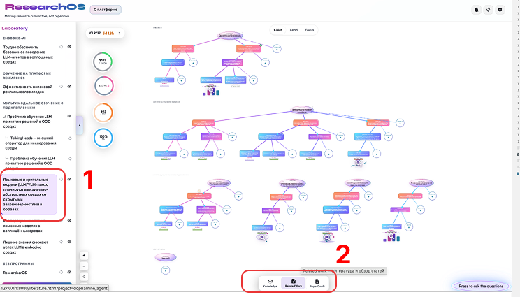
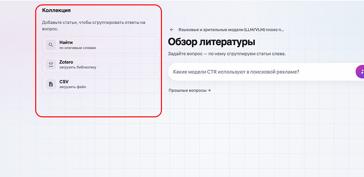
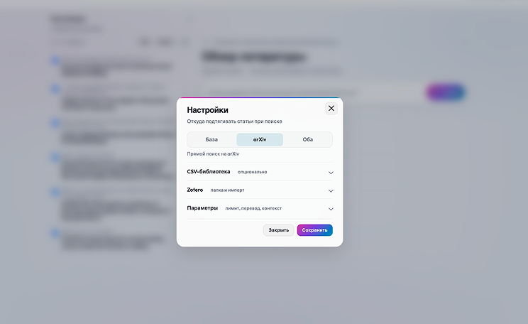
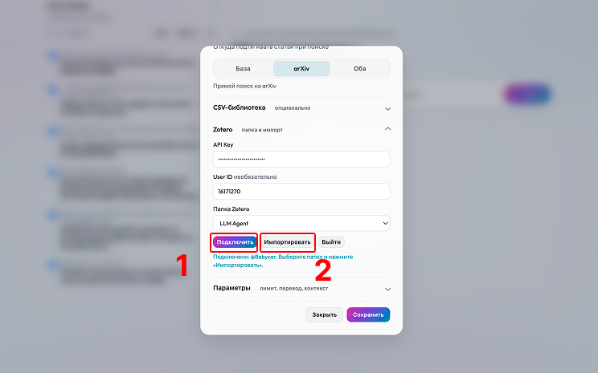
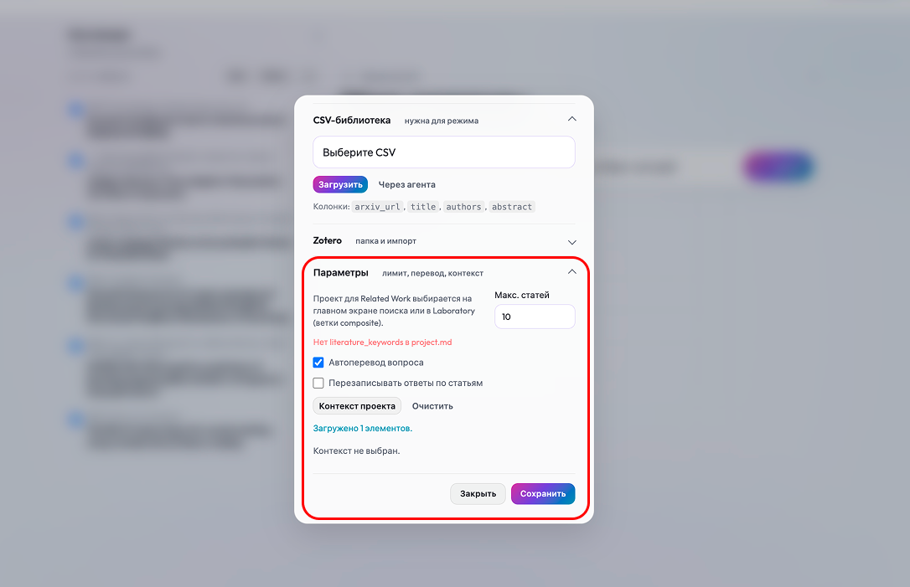
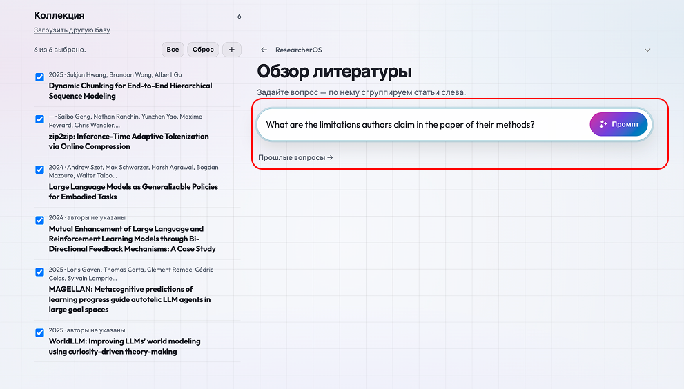
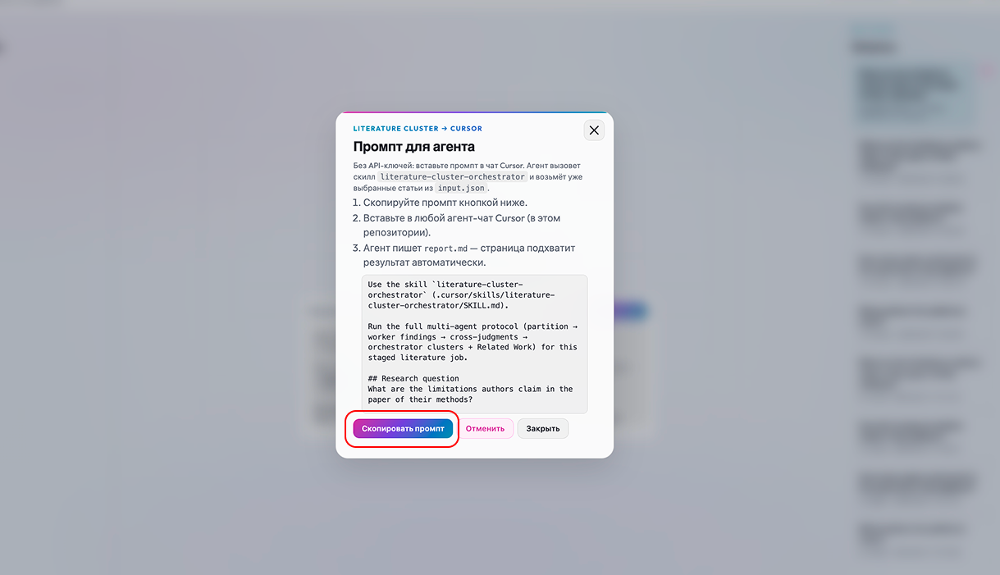
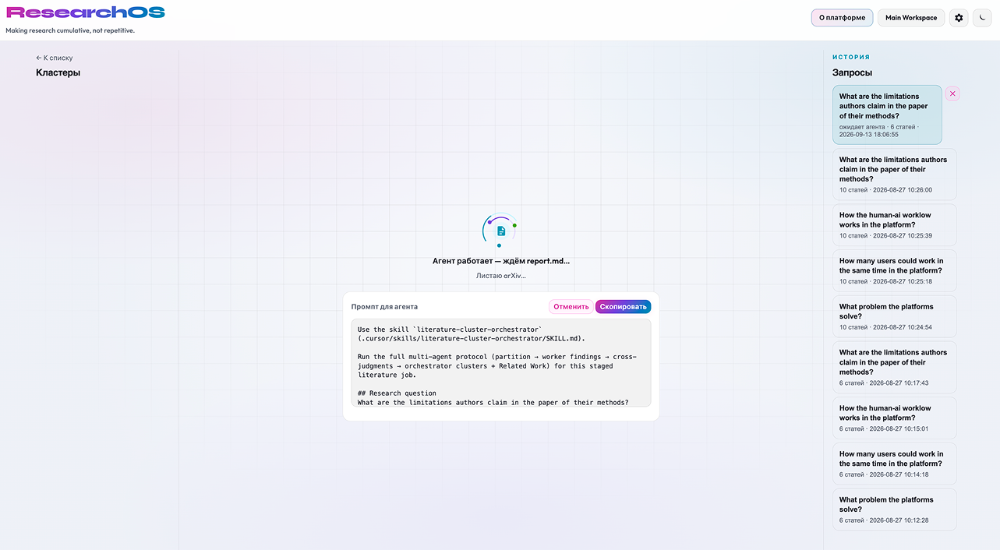
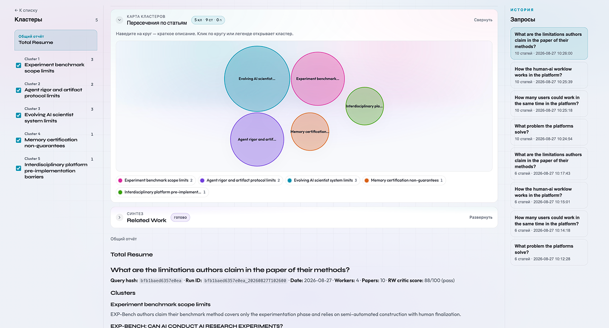
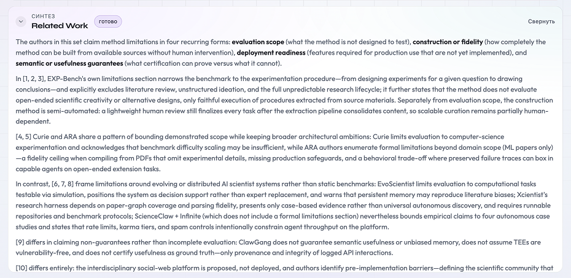

Related Work: от вопроса к обзору
«Обзор литературы» (Related Work) помогает сравнить выбранные статьи по одному вопросу. На выходе вы получите группы работ с похожими ответами, цитаты из источников и связный текст для черновика статьи.
Перед началом
Система для исследовательских проектов (ResearcherOS) должна быть установлена, а исследовательский проект — подключён. Если это ещё не сделано, выберите подходящий путь в разделе «Как начать».
Из корня репозитория ResearcherOS — папки, в которой находится
scripts/koi-serve.sh, — выполните:
./scripts/koi-serve.sh start
Откройте http://127.0.0.1:8080. Откройте рабочую папку
с системой для исследовательских проектов (ResearcherOS) и подключённым
исследовательским проектом в редакторе или другой среде
с помощником-агентом. Убедитесь, что помощник-агент имеет доступ
к файлам этой папки.
1. Коротко: что делать
- Выберите проект слева и откройте раздел обзора литературы (Related Work) в нижней панели.
- Добавьте статьи: найдите их по ключевым словам, импортируйте папку из библиографического менеджера (Zotero) или загрузите файл с таблицей данных (CSV).
- Отметьте статьи и задайте конкретный вопрос, по которому их ответы можно сравнить.
- Нажмите Промпт. Скопируйте задание, вставьте его в чат с помощником-агентом и отправьте.
- Дождитесь отчёта. Сначала проверьте группы и цитаты, затем прочитайте готовый обзор.
2. Подробный урок в интерфейсе
Ниже показан весь путь: от выбора проекта до готового обзора.
Шаг 1. Выберите проект и откройте Related Work
На главном экране выберите проект в левой панели. Затем нажмите Related Work в нижней панели. Откроется обзор литературы для выбранного проекта.

Шаг 2. Добавьте статьи в коллекцию
На пустой странице слева находится коллекция, справа — поле вопроса. В коллекцию можно добавить статьи тремя способами: найти по ключевым словам, импортировать из библиографического менеджера (Zotero) или загрузить файл в формате CSV.
| Кнопка | Откуда берутся статьи |
|---|---|
| Найти | Поиск по ключевым словам в источнике, выбранном в настройках. |
| Zotero | Импорт папки из вашей библиотеки Zotero. |
| CSV | Загрузка таблицы со столбцами arxiv_url, title, authors и abstract. |
Кнопка Найти не просит ввести запрос на этой странице.
Она берёт слова из поля ключевых слов
(literature_keywords) в начале файла проекта
project.md. Например, для тем «модели мира»,
«воплощённые агенты» и «обучение с подкреплением» укажите английские
ключевые слова:
literature_keywords:
- world models
- embodied agents
- reinforcement learning
Если этого поля нет, ResearcherOS покажет красное предупреждение.
Добавьте слова вручную или попросите помощника-агента обновить
project.md, затем снова нажмите Найти.

Шаг 3. Выберите, откуда искать
Нажмите шестерёнку в правом верхнем углу страницы. Кнопка Найти использует выбранный здесь источник:
- База — загруженная библиотека в формате CSV;
- arXiv — открытый архив препринтов (arXiv);
- Оба — сначала поиск в загруженной библиотеке; если найдено меньше заданного лимита, добавляются статьи с arXiv.
Лимит относится только к результатам поиска. Для последующего разбора можно отметить другое число статей.

Шаг 4. Подключите Zotero, если импортируете библиотеку
Если вы уже храните статьи в Zotero, раскройте этот блок. Получите ключ доступа (API Key) на странице zotero.org/settings/keys и вставьте его в соответствующее поле. Идентификатор пользователя заполнять необязательно.
- Нажмите Подключить.
- Дождитесь, пока появится список папок.
- Выберите папку и нажмите Импортировать.
Если Zotero не используете, пропустите этот шаг.

Шаг 5. Задайте лимит, перевод и контекст проекта
В блоке Параметры находятся дополнительные настройки:
- Макс. статей ограничивает число результатов поиска, но не число отмеченных статей в разборе.
- Автоперевод вопроса переводит вопрос перед разбором англоязычных статей.
- Контекст проекта добавляет выбранные узлы дерева к заданию для помощника-агента.
- Перезаписывать ответы по статьям в полном разборе пока не используется, поэтому оставьте этот пункт выключенным.
Красная строка означает, что в проекте не задан список ключевых слов для кнопки Найти. В этом случае импортируйте статьи из Zotero или CSV либо попросите помощника-агента добавить ключевые слова литературы в проект. Если статьи уже добавлены, предупреждение не мешает их разбору. Нажмите Сохранить, когда закончите.

Шаг 6. Отметьте статьи, введите вопрос, нажмите «Промпт»
Отметьте слева статьи, которые должны войти в разбор. Сформулируйте вопрос так, чтобы ответы можно было сравнить. Например: «Какие ограничения авторы называют для своих методов?»
Тема «Обучение с подкреплением» слишком широка: непонятно, по какому признаку сравнивать статьи. После формулировки вопроса нажмите Промпт.
Ссылка Прошлые вопросы открывает как законченные, так и ожидающие разборы этого проекта.

Шаг 7. Отправьте промпт помощнику-агенту
ResearcherOS сохраняет вопрос и список статей, затем показывает готовое задание. Нужный сценарий уже указан внутри него.
Нажмите Скопировать промпт. Откройте чат с помощником-агентом, у которого есть доступ к рабочей папке, вставьте задание и отправьте его. Это может быть редактор кода (Cursor) или другая среда с помощником-агентом. ResearcherOS не запрашивает отдельный ключ к языковой модели.

Шаг 8. Дождитесь отчёта
Надпись «Ждём файл отчёта report.md» означает только, что готовый отчёт ещё не найден. Убедитесь, что вы отправили задание и помощник-агент продолжает работу.
Страница проверяет появление отчёта и покажет результат после его сохранения. Если задание потерялось, его можно скопировать снова. Кнопка Отменить удаляет незавершённый разбор.

Шаг 9. Разберите группы статей
После завершения слева появятся группы статей, которые интерфейс называет кластерами. Каждая группа объединяет работы с похожими ответами на ваш вопрос.
Каждый круг на карте обозначает одну группу. Нажмите круг или название слева, чтобы прочитать краткое описание каждой статьи, её ответ и подтверждающие цитаты.
Оценка в шапке показывает, насколько готовый обзор отвечает на вопрос. Оценка 80 из 100 или выше означает, что проверка пройдена. Ниже 80 — текст сохранился, но вопрос раскрыт не полностью.

Шаг 10. Прочитайте Related Work
В разделе обзора литературы (Related Work) статьи обозначены номерами
[1], [2] и далее. Их названия и разбор
находятся ниже в полном отчёте. Если номер нельзя уверенно сопоставить
статье, попросите помощника-агента добавить в конец обзора нумерованный
список источников и обновить отчёт.
Готовый обзор состоит из нескольких связанных абзацев: сначала общее решение одной группы, затем отличие другой. Он должен отвечать на вопрос, а не пересказывать статьи по очереди. Чтобы использовать текст в статье, скопируйте его в черновик; автоматической кнопки переноса на этом экране нет.

3. Что происходит после отправки
Кнопка Промпт не запускает анализ сама. Пользователь копирует задание в чат с помощником-агентом и отправляет его. Один чат запускает сценарий, который распределяет задачи между несколькими помощниками-агентами.
Такое разделение сохраняет связь каждого вывода с конкретной статьёй и цитатой. Затем отдельные этапы отвечают за группировку, проверку и правку текста.
Кто и что делает
| Этап | Что делает | Зачем так |
|---|---|---|
| Чтение статей | Три или четыре помощника-агента получают разные статьи. Если статей меньше трёх, помощников-агентов тоже будет меньше. Каждый отвечает на вопрос только по своей части и приводит дословные цитаты. | Каждый вывод остаётся связан с конкретной статьёй и источником. |
| Сравнение выводов | Те же помощники-агенты получают краткие выводы друг друга и отмечают, какие решения похожи на прочитанные ими работы. Чужие полные тексты им не передаются. | Работы группируются по способу решения, а не по общим словам в заголовке. |
| Сборка обзора | Отдельный помощник-агент объединяет похожие ответы в группы и пишет первый вариант обзора. | Группы помогают увидеть общие подходы и различия между ними. |
| Проверка обзора | Следующий помощник-агент сверяет обзор с исходным вопросом. Оценка 80 и выше означает, что текст прошёл проверку. | Проверка отделяет ответ на вопрос от общего пересказа статей. |
| Правка обзора | Если проверка не пройдена, отдельный помощник-агент переписывает обзор по замечаниям. Допускается не больше двух раундов правок. | На страницу попадает последняя проверенная версия, а не первый вариант. |
Порядок такой:
Если итоговая оценка ниже 80, сузьте вопрос или набор статей и запустите новый разбор. Вручную менять группы и служебные файлы не нужно.
4. Запуск без страницы обзора
Интерфейс не обязателен. Откройте чат с помощником-агентом, у которого есть доступ к ResearcherOS и файлам исследовательского проекта. Вставьте задание ниже, заменив текст в угловых скобках.
Готовый сценарий разбора литературы
(literature-cluster-orchestrator) содержит инструкции
для помощника-агента. Первая строка запроса запускает этот сценарий.
После отправки помощник-агент открывает инструкцию и выполняет описанный
цикл: чтение статей, сравнение выводов, сборка групп, проверка
и правка обзора.
Задание для помощника-агента
Используй сценарий разбора и группировки литературы
(`literature-cluster-orchestrator`).
Проект:
<полный путь к служебной папке исследовательского проекта
(koi-structure)>
Исследовательский вопрос:
<один конкретный вопрос>
Статьи:
- <ссылка или путь к первой статье>
- <ссылка или путь ко второй статье>
- <добавь остальные статьи>
Создай новый запуск в папке literature этого проекта
и выполни полный разбор несколькими помощниками-агентами:
раздели статьи между ними, собери ответы с дословными цитатами,
сравни решения, составь группы, напиши обзор, проверь его
относительно вопроса и исправь по замечаниям.
Не придумывай статьи и факты. Каждая выбранная статья должна
попасть в одну основную группу. Обзор должен быть связным текстом
с номерами источников, а не списком групп.
Сохрани результат по правилам сценария и добавь запуск
в историю литературы проекта. В конце сообщи путь к результатам.Где смотреть результат
После завершения помощник-агент сообщит путь к созданной папке:
<путь к koi-structure>/literature/<идентификатор запуска>/Сначала откройте:
related_work.md— готовый текст обзора;report.md— полный отчёт с группами, разборами статей и цитатами.
Для проверки деталей:
rw_critique.json— оценка обзора и замечания;findings.json— ответы и цитаты по каждой статье;similarity.json— основания для объединения статей;workers/— промежуточные ответы помощников-агентов.